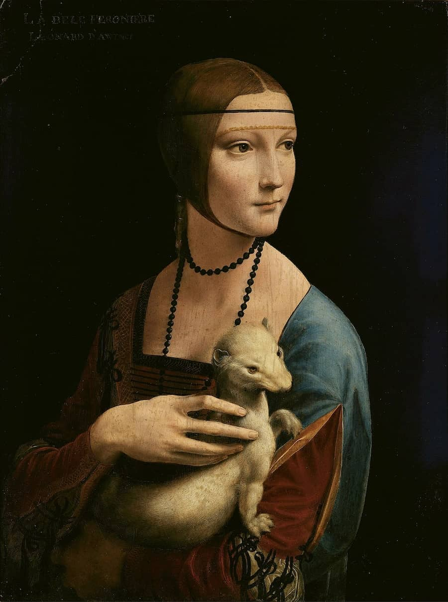

Portraiture, as a common Renaissance art theme, emphasizes on humanism and secularization by depicting its muse in its truest form. This art theme was characterized by painting the likeness of the subject by meticulously adding symbolism (e.g. clothing, objects, jewelry, etc.) while mimicking the physical features with accuracy. Additionally, renaissance artworks under Portraiture commonly adopt a three-quarter view as artists felt it was more dynamic and “dramatic” to do so. Example: Lady with an Ermine by Leonardo Da Vinci.
